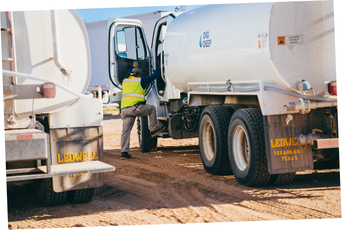
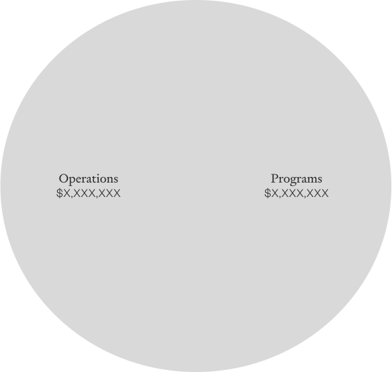

Working taps and toilets for every person in the United States.
We do this through our Impact Model:
01.
Advance community-led solutions
by deploying proven WASH* strategies to ensure that every person in America has clean, running water forever.
(aka taps & toilets for every person in the U.S.)
*WASH is an acronym that stands for "water, sanitation and hygiene". Universal, affordable and sustainable access to WASH is a key public health and equity issue and is the focus of UN Sustainable Development Goal 6.
02.
Develop an evidence base
by collecting, sharing and leveraging domestic WASH data to inform our progress toward universal access.
(aka research on the problem and the solution)
03.
Mobilize America
by empowering people to solve this problem in their lifetimes.
(aka spread the word about the U.S. water crisis)
04.
Build an ecosystem of change
by facilitating high-impact collaboration to lead a diverse, sustainable movement.
(aka enlist partners to make the work happen faster and more effectively)
Community-
LED
WATER
PROJECTS
Section 01
The Navajo
Water Project
Expanding Our Footprint & Services
Our project managers have conducted presentations at the Navajo Chapter Houses and initiated presentations in new locations, providing updates and information on our projects. The NWP project sites have also expanded their operations to encompass various activities, including homesite lease management, bill payment services, and septic cleaning facilitated by a contractor. Furthermore, two sites are actively involved in septic/leach placement and bathroom upgrades.
PLUMBING LAB GRADUATES!
We're thrilled to announce the graduation of the inaugural group of plumbing students from Navajo Tribal University in December 2023. This marks a significant achievement and a pivotal moment as the first cohort completes their studies.
COLLABORATION WITH NAVAJO AGENCIES
Our project managers have conducted presentations at the Navajo Chapter Houses and initiated presentations in new locations, providing updates and information on our projects. The NWP project sites have also expanded their operations to encompass various activities, including homesite lease management, bill payment services, and septic cleaning facilitated by a contractor. Furthermore, two sites are actively involved in septic/leach placement and bathroom upgrades.
PILOT PROJECT:
SEPTIC
This year we have begun installing septic tanks! We perform soil testing with a certified soil tester, which is crucial when placing septic/leach lines. IAPMO and DigDeep completed two test sites by placing pressurized septic systems, with the Indian Health Service and Navajo Nation EPA on-site as well.

The Appalachia
Water Project
PIPED WATER CONNECTIONS
Two piped water expansion projects were undertaken in partnership with the local water utility, with over 40 families receiving first time water access. In addition to these projects, we connected an additional 30 families who were able to receive first time clean water access through one-off support.
CENTRALIZED
SEWER PROJECTS
We completed two centralized sewer projects bringing first time wastewater treatment services to over 90 families who were previously straight piping. This expands our work beyond piped water access to working toilets!
PILOT PROJECT: HOME RAINWATER SYSTEM
In a very exciting collaboration with NWP, we designed and installed the first pilot of a Home RainWater System based on the Navajo Water Project’s Home Water System! This pilot system will be monitored closely over the next few seasons, and then we plan to install many more in 2024 and beyond.
PILOT PROJECT:
SEPTIC
The team completed its first 5 installations of onsite wastewater treatments systems (septic systems), preparing the way for another 30 in 2024. This was a big learning effort both technically–with this being our biggest step to providing off-grid wastewater services–and in terms of federal grant management. This is our first federally-funded project.
The Colonias
Water Project
SUPPORTING SANDBRANCH
Sandbranch is an unincorporated community just 20 miles from downtown Dallas. There’s approximately 100 residents in the community where for decades residents have lacked access to basic infrastructure like water, sewage systems, trash services, streetlights and emergency services. DigDeep’s Colonias Water Project team has been working to address urgent needs via bottled water donations, sanitation services and fan donation, while water hauling and long-term water infrastructure solutions are under exploration. We’re also developing solutions in partnership with community leaders and local residents via ongoing community meetings and one-on-one discussion and building partnerships with other nonprofits and organizations to create a centralized support network and sustainable, long-term solutions.
PLANNING &
DESIGN
We completed our baseline surveys in new expansion colonias: Hillcrest, Tierra de Oro, Laura E. Mundy, Serene Acres, Turf and Sandbranch. These surveys are an entry point into the communities to begin developing relationships and building trust among residents while also giving us information about WASH practices and usages before our project begins.
RELATIONSHIP BUILDING
We've deepend our relationships with key organizations in the region including; UTA, AYUDA, Communities Unlimited, Wayside Baptist Church, University of Texas El Paso, Lower Valley Water District, El Paso Water, WFX, Rio Cog, Horizon MUD, and Southern Sector Rising.
PILOT PROJECT:
SEPTIC
We developed a project in partnership with AYUDA to assess the wastewater systems in 100 homes, and to bring them into full access either through a new septic tank installation where none exist or cleaning and emptying in order to bring ones back into working order. Where our previous work focused on water access, this is an important first step into supporting wastewater access as well.
Founders
THE
WATER
ACCESS
GAP
Section 02
DIGDEEP
Labs
Developing a hub of research, innovation, and impact measurement to ensure a strong evidence base for the organization and the broader WASH sector.
Impact Measurement
In 2023, we built out a dedicated impact measurement team and transitioned to mWater - a secure data platform developed specifically for WASH projects like ours! Because the data is all in one place, our field teams can seamlessly use mWater for conducting surveys, reviewing submitted data, and making in-the-field decisions. 40+ staff have been trained over 7 training trips and over 4500 surveys have been entered into mWater.
Water Access Innovation Cohort
The Water Access Innovation Cohort was an 18-month program that brought local organizations together to tackle the challenges faced by communities across the U.S. that lack centralized access to clean, running water. The cohort aimed to gain a deeper understanding of these issues across the country, identify innovative solutions, and advocate for policy changes that can enhance the effectiveness, sustainability, and reach of these solutions. The program concluded with a federal roundtable in Washington D.C., where cohort members had the chance to share their key findings and policy recommendations with leaders from the USEPA and USDA. These recommendations focused on ways the government can support and scale up the most promising solutions to improve water access for all.
Water Innovation Funds
We established a clear purpose, strategy, and process around both the Water Is Life Fund and the Water Inspiration Fund in order to ensure equity, streamline management, and allow for tracking the impact of this work. In 2023, the Water is Life Fund supported thirteen community-led projects to increase access to clean water and sanitation and the Water Inspiration Fund made strategic investments to support two projects that will provide transformational change to their respective communities.
DIGDEEP
Labs
Fostering high impact collaboration and collective action between WASH organizations working in the United States.
Launch of
Vessel TM
In the fall, we formally launched the Vessel collective with international leader Water for People. Vessel™ is the first step in building a formal, robust and dedicated U.S. WASH sector: a network of over a dozen nonprofits, funders, academics, government agencies and other community champions to share knowledge, strategic coordination and engage in more effective policy making to Close the U.S. Water Gap for good.
Expanded Sector Partnerships
2023 was a hallmark year for demonstrating DigDeep's leadership in the U.S. WASH space. In addition to Vessel's launch, we met with dozens of organizations to expand awareness of the water access gap, including participation in coalitions with PolicyLink, additional co-leadership on events with the U.S. Chamber of Commerce, meetings and partnership discussion with the Navajo Nation Washington Office, American Water Works Association, Community Engineering Corps, GreenLatinos, Xylem, the American Business Water Coalition, Millennium Water Alliance, and many more organizations.
Briefing the
White House
In January 2023, we presented our Draining report to members of the White House Council on Native American Affairs. This briefing led to stronger coordination efforts between DigDeep and EPA, Interior, and other offices. In the fall, the Biden Administration made a major commitment to support the 2+ million folks without water & wastewater nationwide - for the first time on an international stage and on new access specifically.
Senate Hearings
In 2023, thanks in part to advocacy efforts by DigDeep, the U.S. Senate held four hearings around water access. We provided statements for the record, drafted questions, submitted talking points and research, and directly advised several Senate offices throughout the process. Each hearing had a different focus across three subcommittees; focusing on water access and climate change, crumbling infrastructure, funding access, and more. Senator Lujan submitted one of DigDeep's statements on the floor of the Senate. We aided the Committee on Environment and Public Works (EPW) on development of a fourth Senate hearing on funding gaps for disadvantaged and rural communities.
Mobilize
America
COLONIAS WATER PROJECT LAUNCH
We executed the public launch of the Colonias Water Project after work to bring clean, running water to the Cochran colonia was completed. This allowed us to tell a story arc of providing an entire colonia (community) water access from start-to-finish. The triumphant story of a 30-year fight for water access in Cochran received several notable press features on the project, including coverage from CBS News and ABC Nightline News.
H2O IN THE NEWS
IN THE PRESS IN THE PRESS IN THE PRESS IN THE PRESS IN THE PRESS IN THE PRESS IN THE PRESS IN THE PRESS
IN THE PRESS IN THE PRESS IN THE PRESS IN THE PRESS IN THE PRESS IN THE PRESS IN THE PRESS IN THE PRESS
“We’re going backwards in water access’: How 46 million Americans still don’t have safe drinking water”
Highlights: DigDeep
“Water crisis on the Navajo Nation”
Highlights: The Navajo Water Project
“Last summer she turned on the tap and orangey-red water came out. Now she fears for her whole family”
Highlights: The Appalachia Water Project
“Eye on America: Clean water access and more”
Highlights: The Colonias Water Project
RALLYING SUPPORT
Bella Hadid posted in support of Indigenous People’s Day on Instagram and kicked off a year-long fundraising and awareness effort with her digital community. Allies like Bella play a crucial role in spreading awareness about the 2M+ people facing water access challenges nationwide and advocating for solutions to bridge this gap.
JOIN THE CONVERSATION
We were delighted to share our mission and impact across the audio space via three compelling podcast features in 2023. These included Radical Imagination's 'Vigilant for Clean Water,' (featuring: Cindy Howe); Positive Equation’s 'Solving the US Water Problem with Grassroots Marketing’ (featuring: George McGraw); and As She Rises - The Source’ (featuring: our beloved Emma Robbins). These discussions have been instrumental in amplifying our message and engaging diverse audiences in our mission.
THE RIPPLE EFFECT
We launched The Ripple Effect campaign to highlight everything that comes after *that moment* when someone turns on a tap or flushes the toilet for the very first time. Because access to water isn’t just about water. For over 2 million people living in the U.S. without a working tap or toilet, access to water means so much more. It changes the way you can use time. It changes your risk levels for illnesses, both mental and physical. It changes life as you know it.
TEAM
DIGDEEP&
FINANCIALS
Section 03
Team
DigDeep
NEW PLACES,
NEW SOLUTIONS
DigDeep successfully piloted a nation-wide initiative for all staff, from all departments, at all levels of the organization, to have the opportunity to visit, learn, and connect with each other and the regions we work in. Through this initiative, over 31 staff members made 8 visits across 5 different water project sites on the Navajo Nation, in West Virginia, and in the Texas colonias near El Paso. Through one of the visits, an innovative project idea sparked between AWP and NWP teams to design the new Home RainWater System that is now being piloted in West Virginia!
ON THE ROAD
To support our growing organization our Operations team set off on a “Roadshow” traveling to all DigDeep offices across the country to visit with staff at each Water Project Site to share updates on policies, provide training for tools and platforms, and share information to encourage enrollment in company benefits.
FRIENDS TAKE CARE
OF FRIENDS
Our friends at Liquid I.V. are stellar supporters of our work on the ground to turn taps and toilets on for families across the United States. But their mission has always been about more than just water. It's also about supporting communities to further dignity, autonomy, and greater opportunities – and we couldn’t agree more. That’s why we teamed up to deepen employee well-being across Team DigDeep as our crew works to close our domestic water gap for good.
LOCAL VOICES LEADING CHANGE
All of our project leadership comes from the communities we serve, as are more than 42% of our team. We deeply understand the issue we’re working to solve, because 37% of Team DigDeep have lived without running water or a flush toilet at home.
Awards
2024
The Anthem
Awards
The Anthem Awards, which honors the purpose & mission-driven work of people and organizations worldwide recognized DigDeep with two awards: George McGraw won Gold in the Human & Civil Rights category: Nonprofit Leader of the Year and "Draining: The Economic Impact of America's Hidden Water Crisis" won Silver in the Human & Civil Rights category: Research Projects or Publications.
The IWSH Foundation Award
The International Water, Sanitation and Hygiene (IWSH) Foundation Award was presented to DigDeep’s Navajo Water Project Director, Cindy Howe, for her role in raising awareness of the lack of water and sanitation access for indigenous communities and growing a native-led staff to implement solutions that serve households across the Navajo Nation with working taps and toilets.
The US
Water Prize
The US Water Prize for “Outstanding Nonprofit Organization”, one of the most prestigious awards within the US WASH sector, was awarded to DigDeep's Colonias Water Project for bringing clean, running water to the Cochran colonia in El Paso, Texas.
Financials
ALLOCATION OF EXPENSES
Budget Growth Comparison
DigDeep spent a total of $12,993,610 in 2022, including operational, programmatic expenses and fixed assets e.g. vehicles and building/warehouse improvements. We saw major growth across all of our water projects, including the official launch of our Colonias Water Project in Texas, as well as the formalizing of DigDeep Labs and Sector-Building departments.
PROGRAM / OVERHEAD EXPENSE RATIO
Comparison of program v. operating expenses
DigDeep continued to invest in building its administrative capacity to support our growing staff, financial infrastructure and the security of our technology and data. We raised specific, unrestricted funds to support this non-programmatic spend. Our ratio remains almost unchanged from the previous year, and our FY23 ratio is projected at 15%/85%

BREAKDOWN OF PROGRAM EXPENSES
In 2023, our community-led water projects continued to be the bread and butter of our work.
BREAKDOWN OF OPERATIONAL EXPENSES
We raised dedicated funds to build new systems and processes for HR, fundraising systems, recruiting, finance and marketing to ensure that we can sustainably support our growth.
Read our full 2023 Audited Financials
TIPPINGour hatsto you.
DigDeep’s life-changing programs to ensure access to clean, running water and sanitation for every American are only possible through the generous support and collaboration of our partners, including the following corporations and foundations, who have committed transformational gifts to close our water gap.
National Philanthropic Trust (Listed as Anonymous)
Spring
Liquid I.V.
Lake
Aqualateral
Boeing Global Engagement
Bonneville Environmental Foundation
CDC Foundation
Croda Foundation
El Paso-American Housing Foundation, Inc
Gerald L Lennard Foundation, Inc.
Janji
Matthew 6:3
Ray & Kay Eckstein Charitable
Steven and Alexandra Cohen Foundation
The Burkehaven Family Foundation
The Burt Foundation ℅ Miller Canfield (Listed as Anonymous)
The Stirling Foundation
Weissman Family Charitable Foundation
RIVER
Atlas Copco North America LLC
Chris Long Foundation
Foundation Dune, Inc (Listed as Anonymous)
Keiki Foundation Int’l dba Paper for Water
Kohler
Lloyd V. Guild Charitable Foundation
Lori and Robert N Goodman Family Foundation
Molly Blank Fund (Listed as Anonymous)
Not Yet Foundation
OneGen Fund at the Tides Center
The Noon Whistle Fund
William I. Smith Family Foundation
WME
Creek
Coca-Cola Foundation
Ferguson
Four Peaks Rotary Foundation
George & Cindy Rusu Family Foundation
Robert Wood Johnson Foundation
S.L. Gimbel Foundation
Swedish Match
The Polo Ralph Lauren Foundation
OUR PROMISE
The Water Council continues to be a tremendous engine for change – allowing us to allocate 100% of all grassroots donations directly to our programs to close the water access gap. See how it works
FIVE STAR REVIEW
We’ve done it again! We maintained a perfect Encompass score from Charity Navigator and a Platinum Seal of Transparency from Guidestar. The cherry on top? We are officially Great Place to Work certified for the X year in a row.